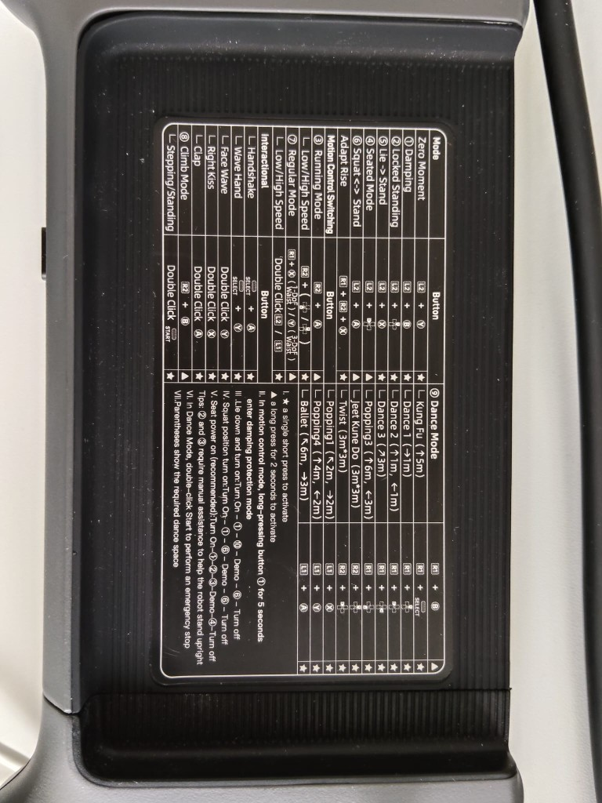

Varianti G1 EDU (U1–U10)
Codici del listino Unitree. La differenza tra i modelli è la base meccanica (23 o 29 DoF) e il manipolatore montato. Il G1 Air non prevede sviluppo secondario: nella tabella ufficiale Unitree la voce è presente solo per il G1 EDU.
| SKU | DoF | Manipolatore | Scheda |
|---|---|---|---|
| G1 Air | 23 | Dummy (non EDU) | Air |
| G1-U1 | 23 | Mani dummy, Jetson Orin NX | U1 |
| G1-U2 | 29 | Dummy + vita 3 DoF + braccio 7 DoF | U2 |
| G1-U3 | 43 | Dex3-1 tre dita, senza tattile | U3 |
| G1-U4 | 43 | Dex3-1 tre dita, con tattile | U4 |
| G1-U5 | — | Inspire RH56DFQ, senza tattile | U5 |
| G1-U6 | — | Inspire RH56DFTP, con tattile | U6 |
| G1-U7 | 37 | Revo2 Basic (5 dita) | U7 |
| G1-U8 | — | Revo2 Touch (5 dita, con tattile) | U8 |
| G1-U9 | 37 | Dex3-1 senza tattile (config. compatta) | U9 |
| G1-U10 | 35 | Revo2 Basic (5 dita) | U10 |
Prezzi nel listino pubblico. Per scegliere tra le versioni c'è la guida quale G1 scegliere; se il lavoro è da banco, guardate anche il G1-D.
Protezione fisica del robot
Telecomando R3
Accensione: pressione breve sul pulsante power → tenere premuto ≥2 s (due beep). Spegnimento: breve + lungo ≥2 s (tre beep).
Telecomando incluso o acquistabile: G1 Remote Controller.
Comandi telecomando (firmware corrente)
Le combinazioni possono cambiare con la versione del firmware: controllate sempre l'adesivo sul vostro telecomando prima di usare il robot.
Legenda comandi stampata sul telecomando R3:
- ★ = pressione breve singola
- ▲ = pressione lunga ~2 secondi (in motion control, tenendo premuto il damping L2 + B per 5 secondi si entra nella protezione damping, come indicato sull'adesivo)

Zero moment / postura
| Comando | Tasti | Tipo |
|---|---|---|
| Zero moment | L2 + Y | ★ — coppia zero, giunti liberi: se il robot non è appeso cade |
| Damping | L2 + B | ★ — smorza i motori: è il comando per fermare il robot |
| Locked standing | L2 + ↑ | ★ — in piedi con giunti bloccati |
| Alzata da sdraiato | L2 + X | ★ — Lie → Stand (solo pavimento duro, vedi protezione) |
| Seduto | L2 + ← | ▲ — attesa transizione |
| Squat ↔ stand | L2 + A | ▲ |
| Adapt rise | R1 + R2 + X | ★ |
Motion control
| Modalità | Tasti | Note |
|---|---|---|
| Running mode | R2 + A | ▲ 2 s — corsa/motion aggressivo |
| Velocità bassa/alta (run) | R2 + ↑ / ↓ | ▲ |
| Regular mode (1 DoF vita) | R1 + X | ▲ 2 s — walk mode stabile (G1-U1 / vita 1 DoF) |
| Regular mode (3 DoF vita) | R1 + Y | ▲ 2 s — walk mode stabile (G1-U2+ / vita 3 DoF) |
| Velocità bassa/alta (regular) | Doppio click L2 / L1 | ▲ |
| Stepping / standing | Doppio click START | ▲ |
| Climb mode | R2 + B | ▲ |
Debug mode (solo sviluppo SDK)
L2 + R2 — ferma il motion controller per evitare conflitti con il SDK; con L2 + A si verifica di essere in debug mode (fonte: Unitree, remote control). Serve solo in lab quando programmi motori a basso livello. Per uso normale con telecomando non entrare in debug: riavvia il G1 per uscire.
Sequenze di accensione consigliate (da sticker)
- Da seduto (consigliata): Accendi → (1) Damping → (2) Locked standing → (3) Running/Regular → demo → (4) Seduto → spegni. Passi (2) e (3) con assistenza manuale alle spalle.
- Da sdraiato: Accendi → (1) → (10) → demo → (6) → spegni.
- Da squat: Accendi → (1) → (6) → demo → (6) → spegni.
Accensione batteria G1
- Inserisci batteria fino al click (interruttore verso il retro).
- Pressione breve sul pulsante → tieni ≥2 s.
- Attendi ~1 min: tutti i giunti in zero torque.
- Segui la sequenza del telecomando sopra: prima il damping (L2 + B), poi procedi.
Metodo sospeso al telaio (lab)
Consigliato al primo avvio: telaio di protezione. Sospendi il robot, piedi a terra solo dopo stabilizzazione in Regular mode. Braccia e gambe libere, nessun cavo in tensione.
Metodo da terra (L2+X)
Payload e braccia
Unitree dichiara un carico massimo per braccio di circa 3 kg sul G1 EDU (circa 2 kg sul G1 base) e precisa che varia molto con la postura del braccio (scheda G1). In pratica, con il braccio esteso anche 1 kg può sbilanciare il robot in avanti e disturbare la camminata. Per saluti e gesture non caricate le braccia.
Batteria e autonomia
Secondo Unitree il G1 monta una batteria intelligente a sgancio rapido da 9000 mAh per circa 2 ore di autonomia. Il valore reale scende con camminata continua e carichi sulle braccia.
- Per una giornata di prove servono almeno due batterie: la batteria aggiuntiva G1 è a listino a 925,83 €, il caricabatterie a 188,87 € (IVA esclusa).
- Spegnete il robot prima di sostituire la batteria e rimettetelo in damping prima di farlo alzare.
- Tenete carico anche il telecomando R3: senza telecomando non avete un modo rapido per fermare il robot.
Rete e SSH
Porta il PC su subnet 192.168.123.0/24 con un IP statico libero (es. .51; non usare .161, .164, .120). Il PC1 (.161) esegue il controllo di movimento Unitree e non è aperto agli sviluppatori; lo sviluppo si fa sul PC2 (.164).
- Ethernet diretto al porto LAN del G1
- Wi‑Fi: secondo la documentazione LeRobot sul PC2 il Wi‑Fi è disattivato di default e va abilitato a mano; per installare pacchetti si può condividere la connessione del PC via Ethernet.
192.168.123.161MCU / motion controller Unitree192.168.123.164Jetson Orin (PC2) — SSH unitree / 123192.168.123.120LiDAR Livox MID-360 (testa)ping 192.168.123.164
ssh unitree@192.168.123.164
# Password predefinita: 123unitree / 123 sono le credenziali predefinite riportate anche nella documentazione LeRobot. Unitree indica di chiedere le credenziali iniziali al supporto, quindi su alcune unità possono essere diverse. Dopo il primo accesso cambiate la password, soprattutto se il robot entra nella rete aziendale.
H2: usa la stessa subnet 192.168.123.x, con un PC1 per il controllo (Intel Core i5) e un PC2 per lo sviluppo (Intel Core i7 sulla versione EDU, secondo la scheda Unitree). Gli indirizzi esatti dipendono dalla configurazione: verificateli sulla documentazione di consegna.
Problemi frequenti
- Ping non risponde → controlla cavo Ethernet, IP del PC, poi riavvia il robot.
- SSH non entra / lento → sessioni SSH saturate o Jetson saturo → riavvio G1.
- SDK fa tremare le articolazioni → motion controller attivo in parallelo, oppure doppio comando (telecomando + SDK insieme). Entra in debug mode solo per sviluppo, oppure ferma comandi SDK.